1What CaVeSal® Academy is
CaVeSal® Academy is the medical education space of the CaVeSal® ecosystem. It brings together the Clinical Record and Obstetric Emergencies guides in one place, with a shared search, the complete bibliography of each app and direct access to the scientific literature and official guidelines.
- 179 guides from the Clinical Record, in 4 chapters.
- 192 cards from Obstetric Emergencies, in 16 tabs.
- 8 search engines for scientific articles and 19 links to official guidelines.
- Everything in Spanish, English and Portuguese.
2Who can sign in and how
Academy is included at no extra cost with any full version of CaVeSal®: Prenatal Calculator, Clinical Record or Obstetric Emergencies.
- Open cavesal.app/academy.
- If you have already activated a full version on that device, you go straight in.
- Otherwise, type the license key of your Calculator, Clinical Record or Emergencies and tap Enter.
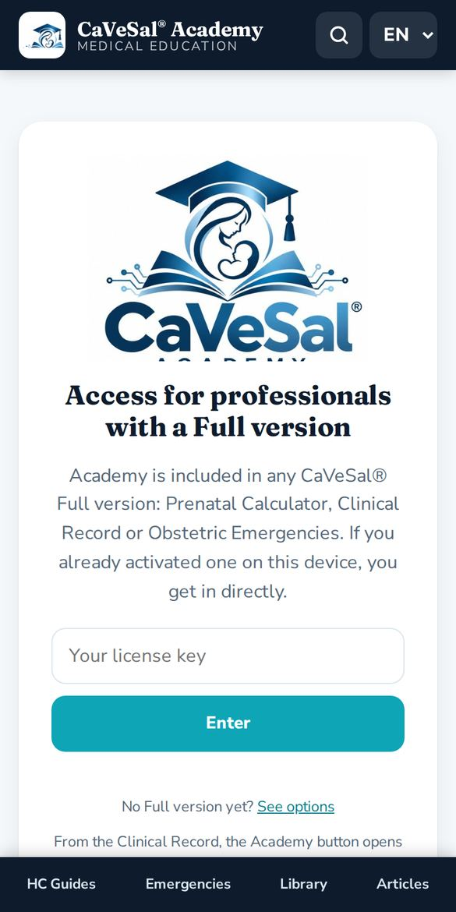
3Opening Academy from your apps
The easiest way is to open Academy from the app you already use. It opens in a separate window and recognizes your key automatically.
- Prenatal Calculator: Academy button in the header and a card in About.
- Obstetric Emergencies: Academy logo in About and in the guide.
- Clinical Record: Academy button in the menu.
A teal bar “← Back to…” with the name of your app appears at the top. Tap it to return where you were.
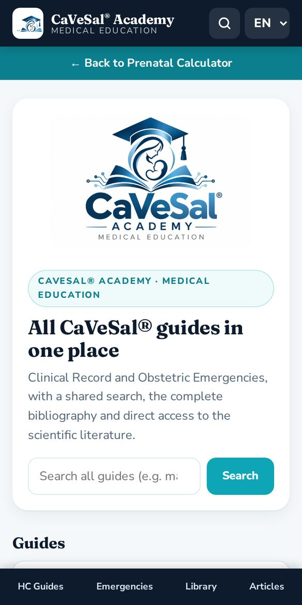
4Home, menu and language
The home screen has a search box and cards for each section. The fixed bottom menu takes you to HC Guides, Emergencies, Library and Articles from any screen.
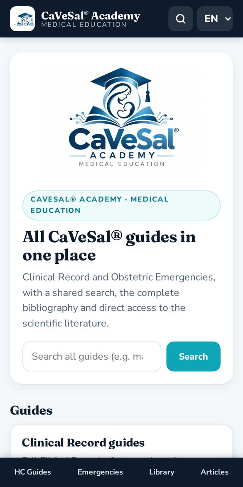
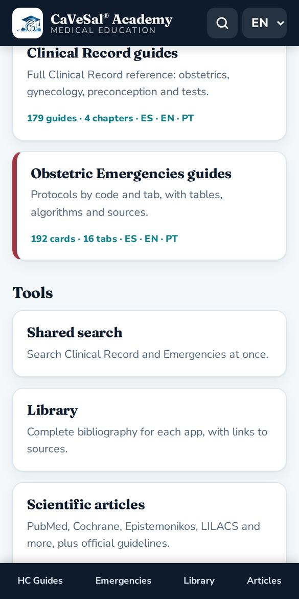
- At the top right, the magnifier opens the shared search.
- The ES · EN · PT selector changes the language of the whole interface and the guides. Academy remembers your choice.
5Shared search
Searches all Clinical Record and Emergencies guides at once.
- Type a clinical term (at least 2 letters), for example magnesium, HELLP or Bishop.
- Filter by All, Clinical Record or Obstetric Emergencies.
- Tap a result to open the guide. The term is highlighted.
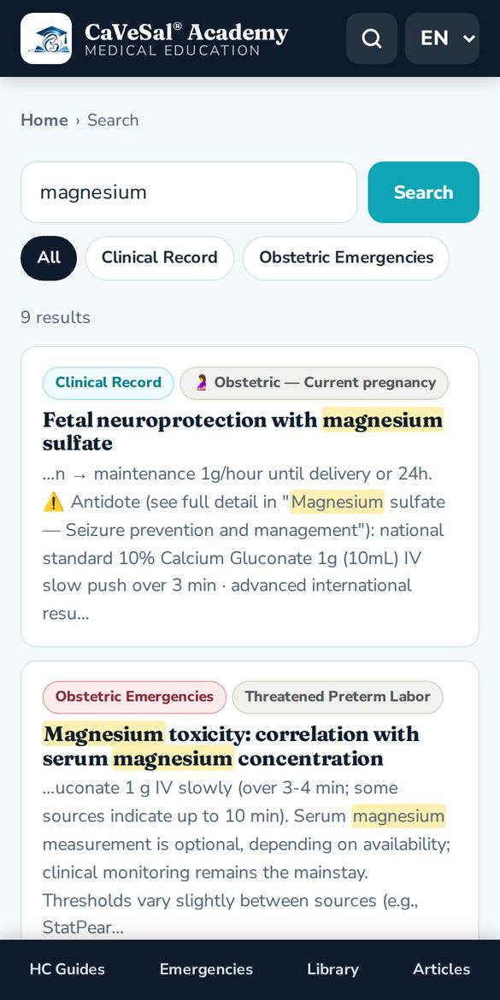
6Clinical Record guides
The same guides as in the Clinical Record, organized in 4 chapters: Obstetric, Gynecological, Preconception and Fertility and Studies.
- Choose a chapter.
- Tap a guide in the index, or use the Go to… selector to jump straight to it.
- Each guide shows its source. At the bottom, View in the original app opens the Clinical Record.
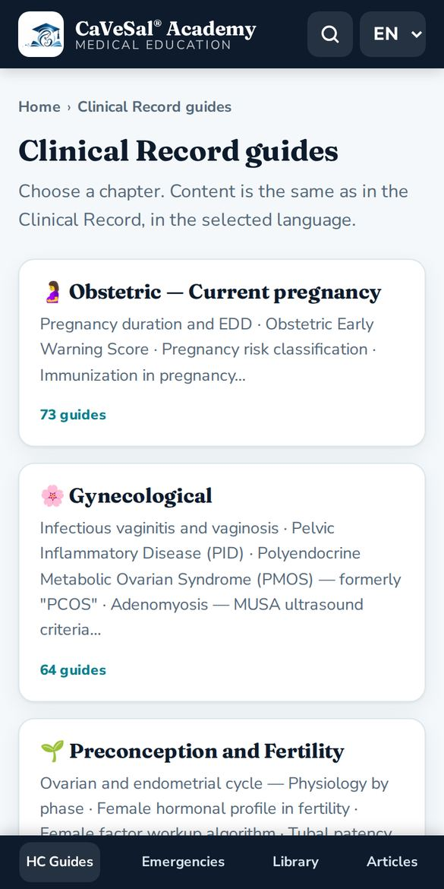
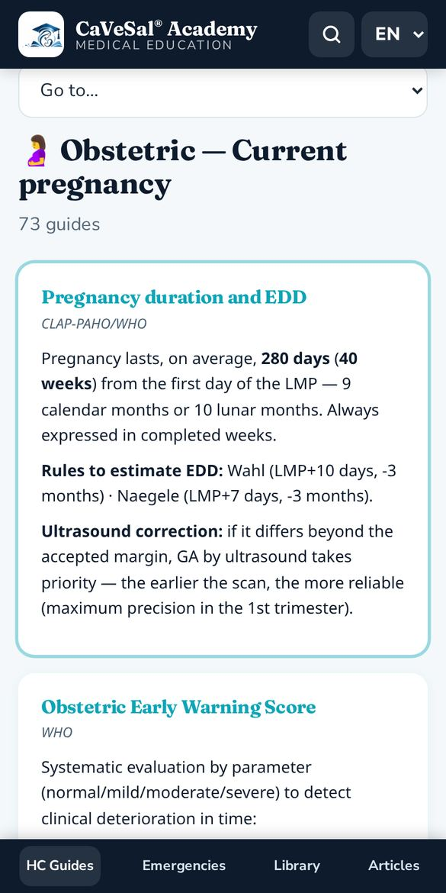
7Obstetric Emergencies guides
The 16 tabs of the Emergencies guide, each with the color of its code: Code Red (hemorrhage), Code HDP — Hypertension, Code Yellow — Sepsis, Obstetric Code Blue, thromboprophylaxis, labor and more.
- Choose a tab.
- Open a card from the index or use Go to….
- Cards include tables, algorithms and sources.
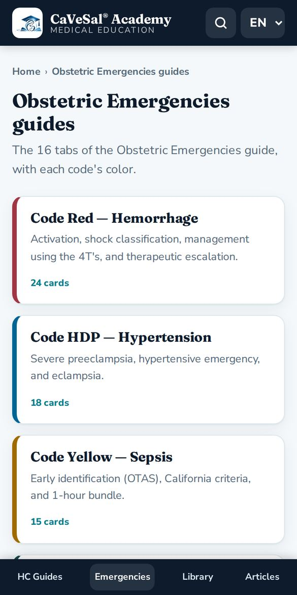
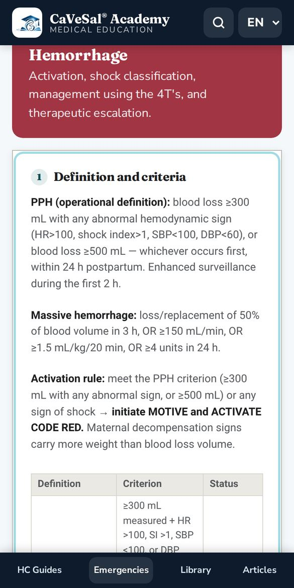
8Library
The complete bibliography behind each app: academic sources, international guidelines and regulations, with links to each source.
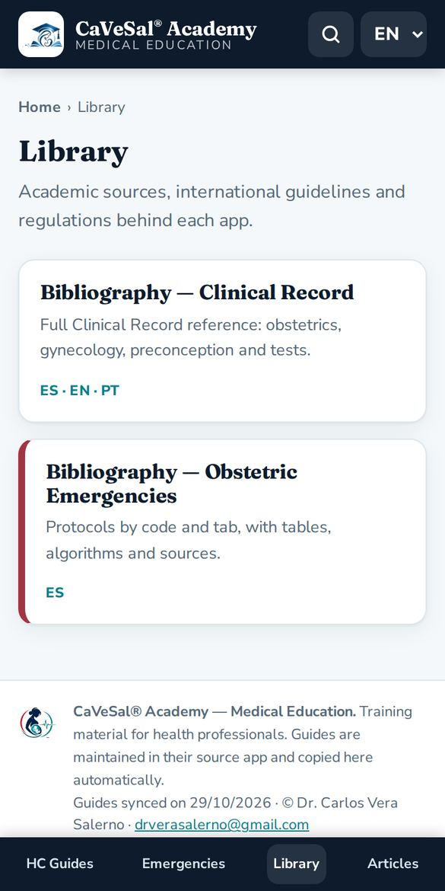
9Scientific articles and official guidelines
Type the topic once and choose where to search. Each search engine opens in a new tab.
- PubMed: indexed biomedical literature (NLM / NIH).
- Cochrane Library: systematic reviews.
- Epistemonikos: evidence from systematic reviews.
- BVS / LILACS: Latin American literature (PAHO).
- Trip Database: guidelines and evidence in one search.
- Europe PMC: plenty of free full text.
- Consensus: answers based on studies.
- Google Scholar: articles, theses, books and citations.
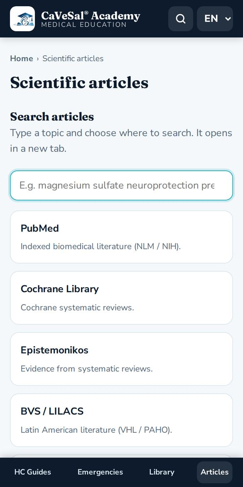
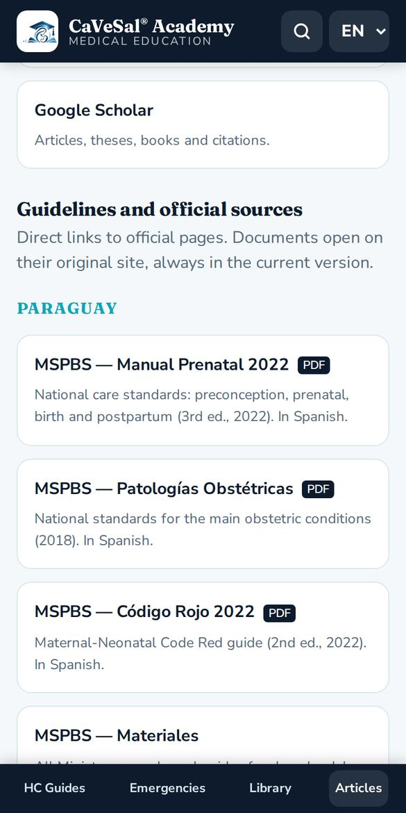
Further down, Guidelines and official sources gathers direct links grouped into:
- Paraguay: MSPBS (National Prenatal Manual 2022, Obstetric Pathologies 2018, Code Red 2022 and materials), FPGO and its journal.
- International organizations: WHO, WHO IRIS, PAHO/CLAP, FIGO and CDC.
- Societies and clinical guidelines: NICE, ACOG, RCOG, SMFM and SOGC.
- Fetal medicine and ultrasound: ISUOG, Fetal Medicine Foundation and Fetal Medicine Barcelona.
10Install it as an app and use it offline
- Android: in Chrome, menu ⋮ → Install app or Add to Home screen.
- iPhone / iPad: in Safari, Share button → Add to Home Screen.
- PC: in Chrome or Edge, install icon in the address bar.
Guides you have already opened are saved. Offline, Academy shows the last copy and displays an “Offline” banner. Article search engines and official guidelines need internet.
↑ Back to contents11Frequently asked questions
Does Academy cost extra?
No. It is included with any full version of the Prenatal Calculator, Clinical Record or Obstetric Emergencies.
My key does not work.
Check that it is complete and already activated in its app. CaVeSal® AI keys do not work for Academy. If your annual plan has expired, a Renew plan button appears.
How often are the guides updated?
They are copied automatically from their source app every day. The date of the last sync is shown at the bottom of Academy.
Can I use Academy in English or Portuguese?
Yes. Choose EN or PT at the top right: both the interface and the guides change.
Does Academy replace clinical judgment?
No. It is training material for health professionals and does not replace clinical judgment or local guidelines.
Who can I contact?
Write to drverasalerno@gmail.com.
Manual updated: October 2026